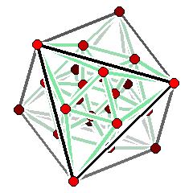

matthias beck
professor of mathematics

|
MATH 883 Polytopes & Varieties Spring 2022
|
 |
Course objectives. We will start with an introduction to polytope theory, including
References. We will initially follow
We will most likely also cover material from
Homework. I will assign homework problems as we go through the material; the problems assigned in any given week are due by the following Friday class. If you type your solutions, you are welcome to submit your solutions over email as a pdf attachment. We can discuss the homework problems at any time during class. You may hand them in early to be able to correct your mistakes. Although you may (and should) work together with your class mates, the solutions you hand in have to be your own. I will assign certain problems to be collaborative; this means you will work on them with 1 or 2 of your classmates and hand in only one solution.
Each student will also give a lecture on a topic related to our class; the lectures will be done in teams of 2. Here is a list of suggested topics; if you have other ideas, feel free to discuss them with me.
Grading system.
| Homework | 90% |
| Student lecture | 10% |
I want to ensure that each of you accomplishes the goals of this course as comfortably and successfully as possible. At any time you feel overwhelmed or lost, please come and talk with me.
The math. The way to learn math is through doing math. It is vital and expected that you attend every lecture. You will get a good feel for the math from there, but it is even more crucial that you do the homework. Working in groups is not only allowed but strongly recommended. Our class is based on Federico Ardila's Axioms:
The Corona sitation. We are living through a pandemic. The health and safety of you and others comes first. While in the times before Corona, attendance was highly correlated with student success in this course, I trust each of you to use your best judgement to keep you and those around you safe, and to attend our class when it makes sense to do so.
Fine print.
SFSU academic calender
Important Deadlines
BS rule
Academic Integrity and Plagiarism
Tutoring
CR/NCR grading
Incomplete grades
Late and retroactive withdrawals
Student disclosures of sexual violence
Students with disabilities
Religious holidays
This syllabus is subject to change. All assignments, as well as other announcements on tests, policies, etc., are given in class. If you miss a class, it is your responsibility to find out what's going on. I will try to keep this course web page as updated as possible, however, the most recent information will always be given in class. Always ask lots of questions in class; my courses are interactive. You are always encouraged to see me in my office.
department of mathematics
san francisco state university
1600
holloway ave
san francisco, ca 94132
becksfsu | @ | gmail.com |
"Geometry is the science of correct reasoning on incorrect figures."
George Polya (1887-1985)
 all materials on my websites are licensed under a creative commons attribution-noncommercial 3.0 unported license, unless otherwise noted.
all materials on my websites are licensed under a creative commons attribution-noncommercial 3.0 unported license, unless otherwise noted.